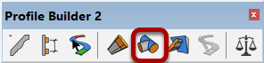
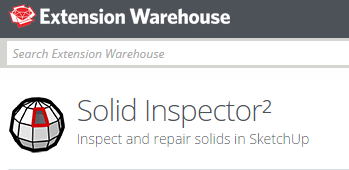
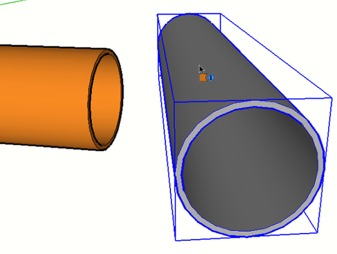
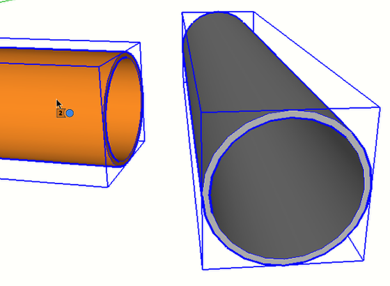
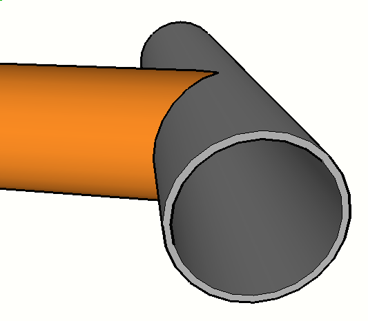

This tools requires SketchUp Pro because it uses the Solid Tools API features that are only available inside SketchUp Pro.

The Profile Member must be a solid. Any Profile Member created from a 2D face (not a polyline) will automatically be a solid. However, it is highly recommended to use the Solid Inspector SketchUp extension (by ThomThom) to check for solid objects and to help fix any non-solid objects. This extension is available on the SketchUp Extension Warehouse.

The object does NOT have to be Profile Member but it must be a solid.
As you hover the mouse, the object wil highlight to indicate that is a valid solid.

As you hover the mouse over a Profile Member, it will become highlighted indicating that it is a valid solid.
Click on the end of a Profile Member to select it.
Continue clicking other Profile Members ends for trimming if desired.
Press ESC to reset the tool.
